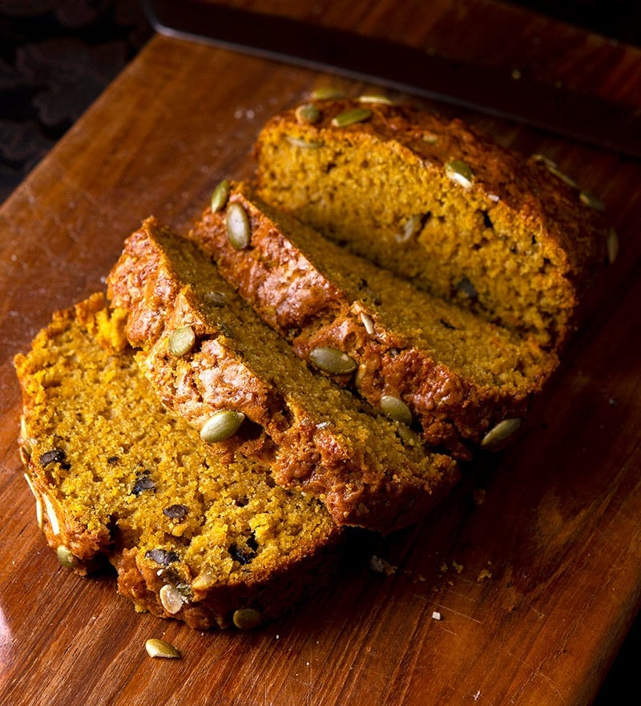

Butternut Squash Bread
Home

Ingredients
- 2 2/3 cups white sugar
- 2/3 cup softened butter
- 2 cups pureed cooked butternut squash
- 4 large eggs
- 2/3 cup water
- 3 1/3 cups all-purpose flour
- 2 tsp baking soda
- 2 tsp baking powder
- 1 1/2 tsp salt
- 1 tsp ground cinnamon
- 1 tsp ground cloves or to taste
- 2/3 cup chopped walnuts (optional)
- 2/3 cup raisins
Steps
- Preheat oven to 175 deg C. Grease two 9x5-inch loaf pans.
- Beat sugar and butter together in a bowl until light and fluffy. Stir butternut squash, eggs, and water into sugar mixture.
- Mix flour, baking soda, baking powder, salt, cinnamon, and ground cloves in another bowl; stir into sugar mixture. Add walnuts and raisins; stir until batter is just blended. Divide batter evenly between the prepared loaf pans.
- Bake in the preheated oven until a toothpick inserted into the center comes out clean, about 1 hour. Cool in the pans briefly before removing to cool completely on a wire rack.
- Enjoy!